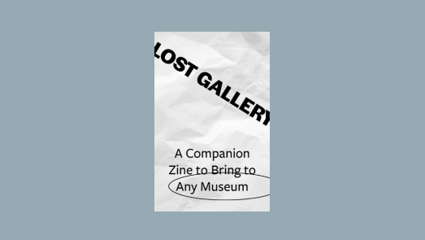

WHAT NEXT?
Lost Gallery Zine
A printable companion zine to help you anaylze art at a museum.
RESOURCES
There is so much more to learn about underrepresented art. I am by no means an expert, so I encourage you to learn more to continue decolonizing how we all think about art. Here are some resources I used to educate myself and guide my process.
Title
Type
Hyperallergic
Podcast
Black Contempoary Art
Blog
Colored Criticism
Web Series
Anti-Racist Art Teachers
Teaching Guide
POC Art Historians
Twitter Thread
Repatriating artworks
Article
Whitewalling: Art, Race & Protest in 3 Acts
Book
Decolonizing Art History
Article